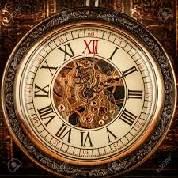

1.La medición del tiempo existe desde que el hombre diferenció el día y la noche.
Por lo que, durante mucho tiempo, el cielo fue lo más parecido a un reloj que existía.
2.El primer reloj que existió fue creado por los egipcios, quienes inventaron
el reloj de sol y la Clepsidra o reloj de agua.
3.El siguiente reloj que se conoce fue el reloj de arena. Funcionaba de forma
similar al reloj de agua,pero con la ventaja de que no se veía afectado por el frío.
4.Estos relojes estaban conectados a una campana grande para que les indicase
con sonido cada cuarto de hora,cada hora en punto y así no tener que asomarse.
5.En la mayoría de las ciudades se siguen conservando y tanto en Londres,
como en Madrid, se han convertido en una pieza histórica.
6.Los relojes de pulsera iniciales solamente los llevaban las mujeres, hasta la 1ª
Guerra Mundial. Ahí se hicieron populares entre los hombres del ejército y los pilotos.
FUENTE:https://www.marie-claire.es/moda/accesorios/articulo/curiosidades-que-quizas-no-sabias-de-los-relojes-751442909872

2.El primer reloj que existió fue creado por los egipcios, quienes inventaron el reloj de sol y la Clepsidra o reloj de agua.
3.El siguiente reloj que se conoce fue el reloj de arena. Funcionaba de forma similar al reloj de agua,pero con la ventaja de que no se veía afectado por el frío.
4.Estos relojes estaban conectados a una campana grande para que les indicase con sonido cada cuarto de hora,cada hora en punto y así no tener que asomarse.
5.En la mayoría de las ciudades se siguen conservando y tanto en Londres, como en Madrid, se han convertido en una pieza histórica.
6.Los relojes de pulsera iniciales solamente los llevaban las mujeres, hasta la 1ª Guerra Mundial. Ahí se hicieron populares entre los hombres del ejército y los pilotos.